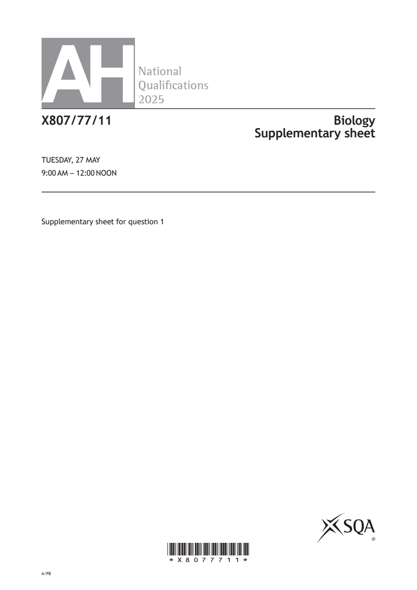
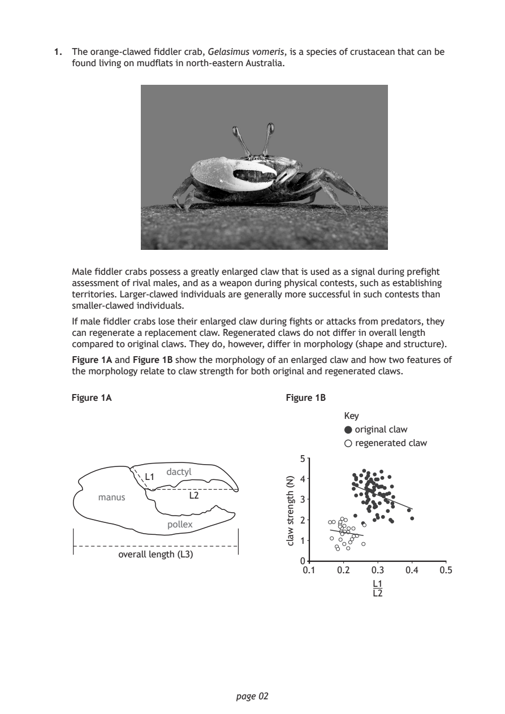
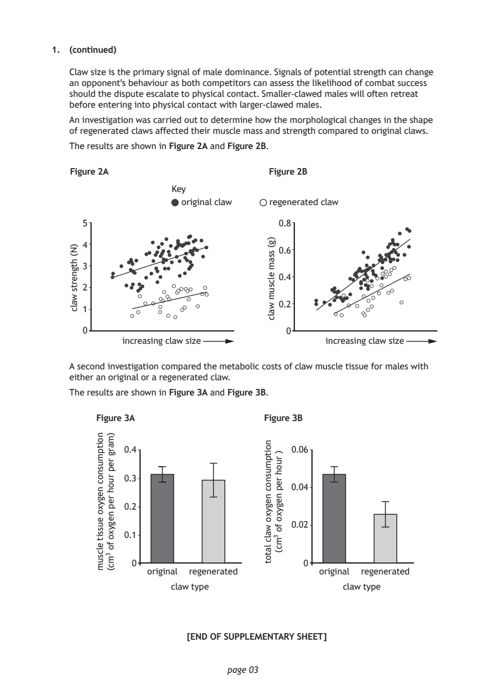
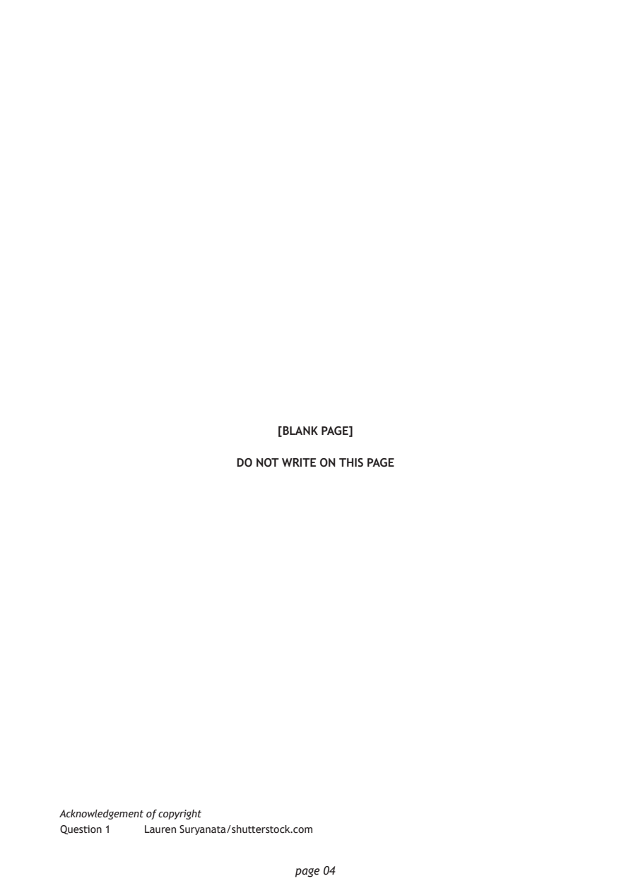

Source: SQA / Qualifications Scotland. This is a StemInteract HTML companion, not an official HTML edition. Use the original images for figures, graphs and table layout.
PDF page 1

Selectable page text
AH
National
Qualications
2025
X807/77/11 Biology
Supplementary sheet
TUESDAY, 27 MAY
9:00 AM – 12:00 NOON
Supplementary sheet for question 1
©
*X8077711*
A/PBPDF page 2

Selectable page text
1. The orange‑clawed fiddler crab, Gelasimus vomeris, is a species of crustacean that can be
found living on mudflats in north‑eastern Australia.
Male fiddler crabs possess a greatly enlarged claw that is used as a signal during prefight
assessment of rival males, and as a weapon during physical contests, such as establishing
territories. Larger‑clawed individuals are generally more successful in such contests than
smaller‑clawed individuals.
If male fiddler crabs lose their enlarged claw during fights or attacks from predators, they
can regenerate a replacement claw. Regenerated claws do not differ in overall length
compared to original claws. They do, however, differ in morphology (shape and structure).
Figure 1A and Figure 1B show the morphology of an enlarged claw and how two features of
the morphology relate to claw strength for both original and regenerated claws.
Figure 1A
5
dactyl
L1 4
manus L2 3
2
pollex
1
overall length (L3)
0
0.1 0.2 0.3 0.4 0.5
L1
L2
page 02
)N(
htgnerts
walc
Figure 1B
Key
original claw
regenerated clawPDF page 3

Selectable page text
1. (continued)
Claw size is the primary signal of male dominance. Signals of potential strength can change
an opponent’s behaviour as both competitors can assess the likelihood of combat success
should the dispute escalate to physical contact. Smaller‑clawed males will often retreat
before entering into physical contact with larger‑clawed males.
An investigation was carried out to determine how the morphological changes in the shape
of regenerated claws affected their muscle mass and strength compared to original claws.
The results are shown in Figure 2A and Figure 2B.
5
4
3
2
1
0
page 03
)N(
htgnerts
walc
original claw regenerated claw
0.8
0.6
0.4
0.2
0
increasing claw size
)g(
ssam
elcsum
walc
Figure 2A Figure 2B
Key
increasing claw size
A second investigation compared the metabolic costs of claw muscle tissue for males with
either an original or a regenerated claw.
The results are shown in Figure 3A and Figure 3B.
noitpmusnoc
negyxo
eussit
elcsum
)marg
rep
ruoh
rep
negyxo
fo
3mc(
noitpmusnoc
negyxo
walc
latot
)
ruoh
rep
negyxo
fo
3mc(
Figure 3A Figure 3B
0.4 0.06
0.3
0.04
0.2
0.02
0.1
0 0
original regenerated original regenerated
claw type claw type
[END OF SUPPLEMENTARY SHEET]PDF page 4

Selectable page text
[BLANK PAGE]
DO NOT WRITE ON THIS PAGE
Acknowledgement of copyright
Question 1 Lauren Suryanata/shutterstock.com
page 04